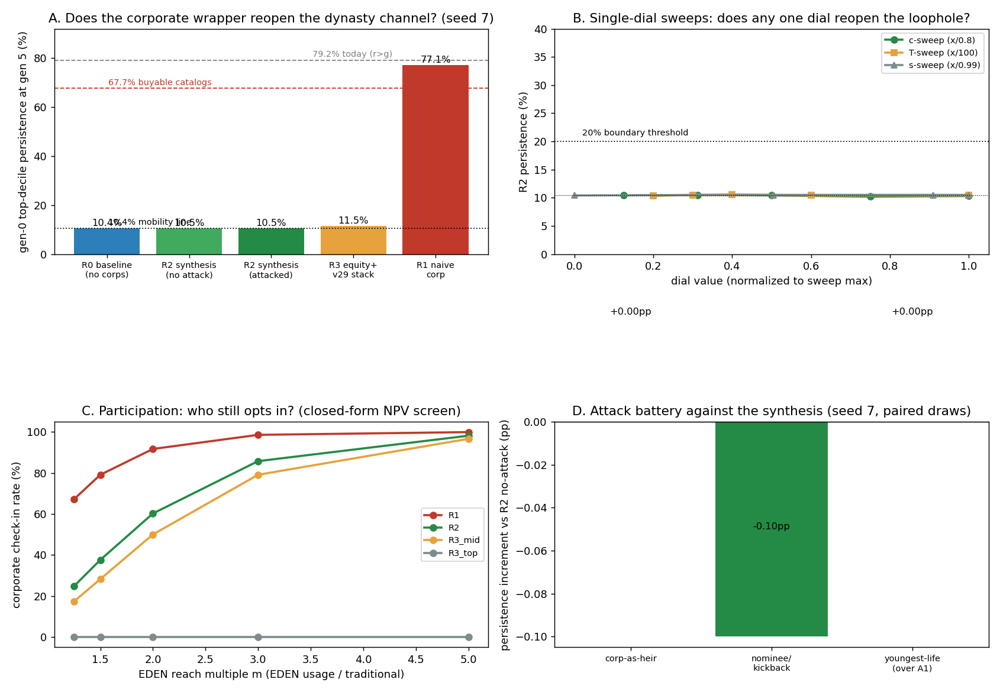

In plain language
Companion to RESULTS - v35.0 Corporate Wrapper.md (July 12, 2026). Every number here comes from the committed results file.
The problem in one paragraph
EDEN's whole defense against permanent aristocracy runs on one fact: people die. When you die, your assets stop paying your heirs and start funding the shared floor — so nobody can inherit a money machine, and in our 150-year simulations the old-money elite dissolves to roughly the level pure chance would give (about 10%, where "the same families always stay on top" would be 100%). But a corporation never dies. If a company can own EDEN income the way a person can, you just put your assets in a company and hand your kids the shares. Death never comes; the brake never fires. This test measures exactly how bad that would be, and whether a set of proposed rules fixes it.
What we found
1. The loophole is fully loaded. Let corporations own EDEN income like people and, after 150 simulated years, 77% of the original wealthy families are still on top — essentially the same as today's economy (79%), and even worse than the "what if you could buy income streams" nightmare case (68%) this vault tested earlier. Worse, by the end nearly all top-tier wealth (96%) is just corporate shells holding streams. The immortality loophole doesn't dent EDEN's core promise — it deletes it.
2. The proposed fix closes it — completely, at these dials. The four rules tested: income always belongs to the actual people who did the work (verified the same way all human earning is verified — a company can't pass a liveness test); the company can organize the work and keep a bounded cut (we tested 25%) as its coordination fee; company-commissioned assets get a fixed commercial term (like a patent — we tested 30 years), after which they fund the floor no matter who's alive; and outside investors get time-limited revenue shares, not permanent tradeable shares of the income. Under those rules — with every cheat we could think of switched on — the original elite's persistence is 10.5%, statistically identical to the 10.4% no-corporations baseline. And here's the beautiful part of the mechanism: a company under these rules can only keep earning by continuously hiring living people to do new work. That's not a dynasty. That's just… a company.
3. The cheats don't pay. We attacked our own fix: hiring puppet "contributors" who kick the money back (fails — the puppet legally owns the stream and can walk away with it; the kickback contract is unenforceable, and our attacker's expected haul was ~22% of a stream that's melting anyway; net effect on dynasties: zero); registering babies or hiring only 20-year-olds to stretch the clock (fails — the commercial term expires first); assigning your own assets to your family company (fails — the income is still anchored to you, and you still die); dissolving and re-registering the same asset to restart the term (fails — you have to pay for real new work, and the expired original now competes with you for free from the commons). We even cranked every dial to its worst at once — an 80% cut, a 100-year term, zero verification, near-perfect kickbacks — and the elite still only reached 17% after 150 years, versus 77% for the do-nothing case. No single rule is carrying the load; they multiply. That was the run's biggest surprise: we registered an expectation that we'd find danger thresholds on individual dials, and we were wrong — there aren't any. Filed as a failed expectation, in public, per house rules.
4. Companies still show up. The fear was that closing the loophole kills corporate participation and stunts the network. Measured: if putting an asset into EDEN reaches about twice the audience of keeping it private, roughly two-thirds of the corporate volume that would join under no-rules still joins under the strict rules — rising to ~90% as EDEN's reach grows. And the surprising economics: the coordinator's cut isn't really what companies pay — in a competitive hiring market, giving builders their income stream just lowers the wage the company owes them. What companies actually give up is the term — earning for 30 years instead of forever. One honest caveat: this assumes builders mostly value their streams like money when negotiating pay; if they heavily discount them, participation drops — that's a thing to measure in a pilot, not assume.
5. The "softer" alternative is a trap dressed as a compromise. We also tested the permissive route: let companies own income outright, but subject corporate holdings to EDEN's existing anti-hoarding taxes and inheritance haircuts. It does hold dynasties near 11% — but only because the top tax band (5%/yr) exceeds what the assets yield (4%/yr), so no large company would ever hold the position at all. It "works" by quietly confiscating, which means it's really exclusion — the thing we were trying to avoid — plus it hands corporate critics their best talking point. The strict-but-fair rules beat it on both goals at once.
6. One new rule is genuinely needed: count shells together. EDEN caps how much of the shared royalty pool any one node can take. We showed a single owner splitting into 25 shell companies multiplies its take ~25× — the cap is per-shell, and shells are free. Fix: apply the cap to the beneficial owner — the human(s) or parent who ultimately controls the shells — same principle as EDEN's one-person-one-account. That's this run's new rule candidate for ratification.
(Status update, July 18, 2026: ratified. The whole rule set here became DR-18, ratified — 30-year term, 25% coordinator's cut, and the count-shells-together rule adopted as a gate. The follow-up question this note leaves open — how does EDEN ever learn who the beneficial owner is? — was answered and tested the same week: see EVE Sim v36 - Owner Linkage and DR-19, also ratified — registering ownership is the only way a company can hold income at all, and the registration itself is the deed.)
The bottom line
A corporation in EDEN should be a coordinator, never an owner. Anchor income to mortal humans, put a clock on commissioned works, cap the middleman's cut, and count shells as one owner — and corporate immortality stops being a loophole while companies keep every reason to participate. The one thing no rule here can stop: company shares still trade in the traditional economy, so a well-run coordinator is still worth owning — but what's being owned is a fee on ongoing living work (about 6% of top-tier wealth in our runs), not a perpetual claim on the dead's gardens. That's not a dynasty; that's a business.
Honest limits, briefly: this is a stylized 150-year model — the numbers are orderings and mechanisms, not forecasts; the kickback attack is modeled as expected value, not a full cat-and-mouse game; and two dials (how builders price their streams into wages, how often kickback puppets defect) can only be measured in the real world. All bars were registered before the code ran; the one expectation the run refuted is filed as a failure, not rewritten.
Figures


Technical results
Run: July 12, 2026. Spec: v35 SPEC - Corporate Wrapper (registered).md — bars CW0–CW8 fixed before code (one pre-code addendum: the wage-offset θ in the participation model, filed before the engine existed; no bar threshold changed). Engine: corporate_wrapper_sim.py (deterministic; the only RNG is the chassis's labor/initial draws, seeds 7 + 11; import-guarded). Committed: results_v35.json, fig_v35_corporate_wrapper.png. Extends the committed purchase-channel chassis (EVE Sim v3 - Multi-Generational Wealth), whose four committed anchors this engine re-ran in an isolated copy and reproduced exactly (10.4 / 10.2 / 67.7 / 79.2). Every number below traces to results_v35.json. Produced by Claude Fable 5, owner-directed [FABLE] cell — see the INDEX provenance note.
Verdict in one line: the immortality loophole is real and fully loaded — a corporation allowed to own EVE income the way a human does rebuilds dynasties at 77.1% persistence, worse than the 67.7% buyable-catalog counterfactual and nearly at today's 79.2%, because corporate shares never meet a succession event at all — and the owner's four-rule synthesis (contributor-anchor + commercial term + bounded coordinator's cut + revenue-share financing) closes it to 10.5% against the committed 10.4% mobility line even with the full attack battery running, at two-thirds of naive corporate participation; no single dial reopens the loophole (the registered boundary expectation was refuted in the safe direction — a defense-in-depth finding), the strongest attack (true-contributor kickback) adds ~0pp, and the permissive alternative (tradeable equity under the v29 brake stack) also contains dynasties (11.5%) but only by making large corporate holdings uneconomic — it closes the loophole by confiscation-in-effect where the synthesis closes it by anchoring.
Bar summary (8 PASS; CW4 FAILS its registered expectation as a finding — the safe direction)
| Bar | Registered | Measured (seed 7; seed 11 in JSON) | Result |
|---|---|---|---|
| CW0 anchor/regression | committed engine re-runs exact; R0 within ±2pp of 10.4; market-mimic within ±3pp of 67.7 | committed rerun exact (all four); R0 10.4 (Δ 0.0); mimic 68.0 (Δ 0.3) | PASS |
| CW1 the loophole is real | R1 naive-corp ≥ 50% | 77.1% (seed 11: 76.9) — above buyable-catalogs 67.7, near today 79.2; wrapper = 96.4% of top-decile wealth | PASS (threat demonstrated) |
| CW2 the synthesis closes it | R2 attacked ≤ 15% and within 5pp of R0 | 10.5% (seed 11: 10.1), gap vs R0 0.1pp; wrapper = 6.4% of top-decile wealth | PASS |
| CW3 attack battery | A3 ≤ 1pp; A1 ≤ 5pp; A2 ≤ 3pp; ladder ratio ≤ 1.1× | A3 0.0pp; A1 −0.1pp; A2 0.0pp; ladder 1.068× | PASS |
| CW4 dial boundaries | single-dial boundaries interior + central dials safe by margins | No boundary exists in any single-dial sweep (c, T, s, κ, h all stay 10.2–10.6%); central dials safe | FAIL — refuted expectation (F4) |
| CW5 participation (Q2) | R2 index ≥ 0.60 of naive at m=2; ≥ 0.80 at m=3; monotone in m | 0.657; 0.870; monotone ✓ (θ-sensitive — see F5) | PASS |
| CW6 permissive alternative | R2 ≤ R3 ≤ R1 and R3 ≤ 35% | 11.5% (10.5 ≤ 11.5 ≤ 77.1) — far below the ≤35 expectation | PASS (with the participation sting, F6) |
| CW7 shells vs the cap | evasion ≥ 10× at 25 shells; aggregation restores ≤ 1.1× | evasion 24.7×; with beneficial-owner aggregation 1.0× | PASS (gate candidate) |
| CW8 harness | deterministic; seeds within 3% rel or 1.5pp | double-run byte-identical (JSON + figure); max seed gap 0.9pp (R3) | PASS |
Findings
F1 — The loophole is worse than "buyable catalogs" (CW1). Give a corporation human-style ownership of EVE income and dynastic persistence lands at 77.1% (regimes.R1_naive.seed7.persistence_pct; seed 11: 76.9) — above the committed 67.7% buyable-catalog counterfactual and statistically adjacent to today's 79.2% r>g world. The mechanism is exactly the one the multigen sim's honesty note feared, plus one turn of the screw: a purchased catalog still suffers succession friction when the buyer dies (the committed eden_market triple loses ~46% of the stock per generation to transfer decay and bequest), but corporate shares held offshore never meet a succession event at all — the wrapper stock compounds at +3.6%/yr (stacked_extreme_diagnostic.closed_form.naive_net_growth_per_yr = 0.0358 is the same arithmetic) and passes intact. By generation 5, wrapper claims are 96.4% of top-decile wealth (v_wrap_share_top10 = 0.9637): the economy's top tier is no longer people who earn — it is shells that hold. This is the quantified case that EDEN cannot treat a corporation as an ownership-person; the Legacy mechanic's entire anti-dynasty force runs through mortality, and a corporation has none.
F2 — The owner's synthesis closes it, and not by excluding corporations (CW2). With income anchored to verified contributors (canon §2a's liveness-verified human minting event — a corporation cannot pass it), a bounded coordinator's cut (central 25%), a fixed commercial term (central 30yr), and capital via time-limited revenue shares folded into the cut, dynastic persistence with the full attack battery running is 10.5% vs the same-seed baseline's 10.4% (bars.CW2: gap 0.1pp; seed 11: 10.1 vs 10.1). The structural reason is worth stating precisely, because it is the design insight of the cell: under the synthesis the wrapper's runoff hazard (λ = freshness 0.42% + term 3.33% + contributor mortality 2.22% ≈ 5.97%/yr) exceeds even the attack-boosted capture rate (δ ≈ 1.67%/yr at central dials — regimes.R2_synthesis_attacked.seed7.diag), so the corporate asset base decays unless the corp keeps commissioning new real work. A structure that must continuously buy living contribution to stay alive is a firm, not a dynasty — corporate participation stays (F5), corporate immortality stops mattering, because nothing the corp holds outlives the humans who did the work by more than the term.
F3 — The registered attacks don't pay (CW3). Measured as persistence increments over no-attack R2 on paired draws (attacks.increments): corp-as-heir +0.0pp — routing your own assets through a family corp changes nothing, the mint-anchor is still your mortal self and the stream still dies at min(your death, term); nominee/kickback −0.1pp (noise-level) — at central dials the attacker's best variant is the true-contributor kickback (capture = κ·S_kick = 0.6 × 0.374 = 0.224 of the contributor share; the fake-puppet variant is worse, 0.037, because 90% of fake anchors fail attestation), and 22% of three-quarters of a decaying stream does not build a fortune; youngest-life +0.0pp — hiring 20-year-olds lengthens the contributor's life but the 30-year term binds first, and the kickback still decays at the defection hazard; term-laddering 1.068× ≤ the 1.1 bar — re-commissioning a half-strength "v2" at half cost at each expiry is economically ordinary reinvestment (and the commons-ified v1 competes with it for free). The one honest asymmetry: at zero anchoring strictness the attacker flips to fake puppets (stacked_extreme_diagnostic.engine_diag.attacker_prefers = "fake_puppet") — anchoring strictness is what forces the attacker down into the low-yield kickback game, which defection then erodes.
F4 — REFUTED REGISTERED EXPECTATION (CW4 FAIL, the finding): no single dial reopens the loophole. The SPEC registered the expectation that the sweeps would locate interior danger boundaries (c*, s*, T*). They do not exist: across coordinator cut 0.10→0.80, term 20→100 years, anchoring strictness 0.99→0.0, kickback 0.3→0.9, and defection 0.20→0.02, R2 persistence never leaves 10.2–10.6% (sweeps.*) — even φ (the share of elite savings thrown at the wrapper) at 0.75 only reaches 10.9%. The closed-form reason: dynastic compounding requires capture δ > runoff λ, capture is bounded by the 4%/yr stream yield times a fraction, and λ always contains 1/T + 1/L — so no single dial's extreme can cross the wall; it takes all of them at once. The labeled stacked-extreme diagnostic (not a bar) runs that corner — cut 0.80, term 100yr, zero anchoring, κ 0.9, defection 2%/yr, youngest hires — and even there the machine compounds at only +0.60%/yr (vs naive's +3.58%) and reaches 17.2% persistence at the 150-year horizon (stacked_extreme_diagnostic). The registered expectation was wrong in the safe direction: the synthesis is not a dial-tuned defense but a defense-in-depth — term, anchoring, and defection multiply, and the failure region is a five-dial conspiracy, not a threshold. (Bar unmoved; FAIL filed as registered.)
F5 — Participation survives the rules, and the cut is not the price — the term is (CW5). At the central reach multiple (EDEN usage = 2× traditional for the same asset), 65.7% of the corporate check-in volume of the naive regime still opts in under the synthesis (participation.index_central.R2_vs_R1), rising to 87.0% at m=3 and monotone in m. Two design insights fall out of the closed form: (a) the coordinator-cut barely appears in the participation condition — in a competitive builder market the corp recovers the contributor's stream share as a wage offset (θ), so the cut is a split of surplus, not a tax; what the corp actually pays for is the term (a 30-year truncated stream is worth 73.5% of a perpetual one at these rates — breakeven reach m = 1.757 vs the naive 1.0, participation.m_breakeven); and (b) this makes the cut ceiling nearly free as policy: sweeping c from 0.10 to 0.80 moves dynasty persistence by 0.3pp (F4), so the ceiling's real function is labor protection and optics, not dynasty defense. Honest dependency: θ is load-bearing for this bar — at θ=0.4 (contributors heavily discount their stream share) the index falls to 0.365 (participation.theta_sweep), below the registered 0.60. If real builders won't price their streams into wages, participation is materially worse than headline; θ belongs on the pilot-measurement list.
F6 — The permissive alternative "works," but by a mechanism the owner should see before choosing it (CW6). Tradeable corporate equity in EVE income under the existing v29 stack (progressive demurrage on the equity's value at the v1.4 bands + 60%-of-excess non-compounding succession + freshness decay) holds persistence to 11.5% (seed 11: 10.6; haircut sweep 0.3/0.6/0.9 → 13.0/11.5/11.0) — ordering R2 ≤ R3 ≤ R1 as registered, and far below the ≤35% the SPEC expected. But the participation panel shows how: at the top demurrage band, 5%/yr on equity value exceeds the 4%/yr stream yield — negative carry — so the breakeven reach multiple for large corporate holders is effectively infinite (participation.m_breakeven.R3_top; small mid-band holders break even at m=2.0). R3 contains dynasties by making large corporate EVE positions uneconomic to hold, which is exclusion wearing a market mechanism's clothes — it would suppress the asset inflow Q2 exists to protect and hand the opposition its talking point. R2 dominates R3 on the joint (Q1, Q2) objective. (Also noted: demurrage-on-equity is a design-under-test here, not canon — canon demurrage binds idle cash.)
F7 — The per-node royalty cap does not bite corporate holders without a beneficial-ownership rule (CW7). On a royalty pool calibrated to the committed dependency-graph concentration (fitted Gini 0.9253 vs committed 0.9264; top-10% 0.892 vs 0.8687 — close, disclosed), a single beneficial owner who splits its position across 25 shells multiplies its capped pool share 24.7× (cw7_shells.evasion_factor) — the per-node 20× cap is per-node, and shells are free. Applying the cap at the beneficial-owner level restores the bound exactly (ratio 1.0). This is the corporate-flavored rhyme of A2 one-person-one-account, and it is the cell's concrete gate candidate: caps and W_age must aggregate across common beneficial ownership, or they are shell-theater.
Honest limits
Everything the committed chassis discloses is inherited here (one child per lineage, stylized savings, wealth = stock + 10×income proxy, 6×25-yr generations; ordering robust, magnitudes illustrative). The wrapper layer is closed-form: kickback defection is an expectation (S = λ/(λ+h)), not a strategic game — a clever contract-enforcement technology (reputation staking, escrowed kickbacks) would raise capture above it, though it would have to beat the term and mortality hazards that do most of the work; the offshore share market is a capitalization multiple (δ·A/r), not a traded market with sentiment; REINVEST=1.0 gives the attacker maximal compounding. Participation is an NPV screen with lognormal reach heterogeneity, and θ (wage offset) is a load-bearing assumption measured nowhere — registered central 0.7, swept 0.4–0.9, and honestly flagged: at 0.4 the CW5 index fails. R3's demurrage-on-equity applies the v1.4 cash bands to equity value by design hypothesis. The 150-year horizon understates truly patient capital (the stacked extreme's +0.6%/yr would eventually matter at 300 years — but so would three centuries of politics). The pool fit for CW7 overshoots committed top-10% by 2.3pp. No number here is a forecast; the deliverables are the ordering, the mechanism, and the boundary geography.
Recommendation (for the owner to react to)
Adopt the synthesis (R2) as the canon candidate for corporate participation — it closes the immortality loophole at the least cost to legitimate corporate function measured in this cell. Specifically: (1) contributor-anchoring is the keystone — the mint-anchor must pass the existing §2a liveness-verified human-minting test, which a corporation structurally cannot; enforcement strictness matters mainly at the registration step (it forces attackers from full-capture puppetry into defection-eroded kickbacks); (2) the commercial term is the participation price, set it consciously — anywhere in 20–40yr the dynasty numbers are indistinguishable (10.3–10.6%), so the choice is a Q2/politics dial, not a Q1 dial; (3) the coordinator-cut ceiling is a backstop, not a defense — persistence moves 0.3pp across c ∈ [0.1, 0.8]; set the ceiling for labor-protection optics (25% reads well) and let the builder market do the rest; (4) do not take the permissive-equity road (R3): it reaches a similar persistence number by making large corporate holdings uneconomic — exclusion with extra steps, and it forfeits the participation the opt-in boundary is supposed to buy; (5) new gate candidate: beneficial-owner aggregation for the per-node royalty cap and W_age (CW7's 24.7× shell evasion is otherwise free); (6) pilot-measure θ (do builders actually price their stream share into wages?) and the real-world defection rate h — the two dials this cell cannot know. Roads not taken and the full decision framing are recorded in 00 DECISION RECORD DR-18.
Files
v35 SPEC - Corporate Wrapper (registered).md— bars CW0–CW8 before code; one pre-code addendum (wage offset θ)corporate_wrapper_sim.py— chassis + wrapper engine (import-guarded, deterministic)results_v35.json— every number above;fig_v35_corporate_wrapper.png— four panelsPLAIN LANGUAGE - v35.0 Corporate Wrapper.md— the business-owner companion
Run and written July 12, 2026, by Claude Fable 5 (owner-directed [FABLE] cell; per the standing INDEX provenance rule, the signature is the owner's record, not model evidence). Verification: the committed purchase-channel engine re-ran exactly in an isolated copy (CW0a); the v35 engine double-runs byte-identically (JSON + figure) and seeds 7/11 agree within 0.9pp on every headline; numbering checked against the folder max (v34) before registration. CW4's FAIL is a refuted registered expectation filed as a finding — bar unmoved. Housekeeping: four zero-byte scratch files (run1.json, run1.log, run2.log, fig1.png) from the determinism double-run could not be deleted from the sandbox (mount-blocked, the standing v3-D10 class) — owner: delete in Finder at will.
Raw data